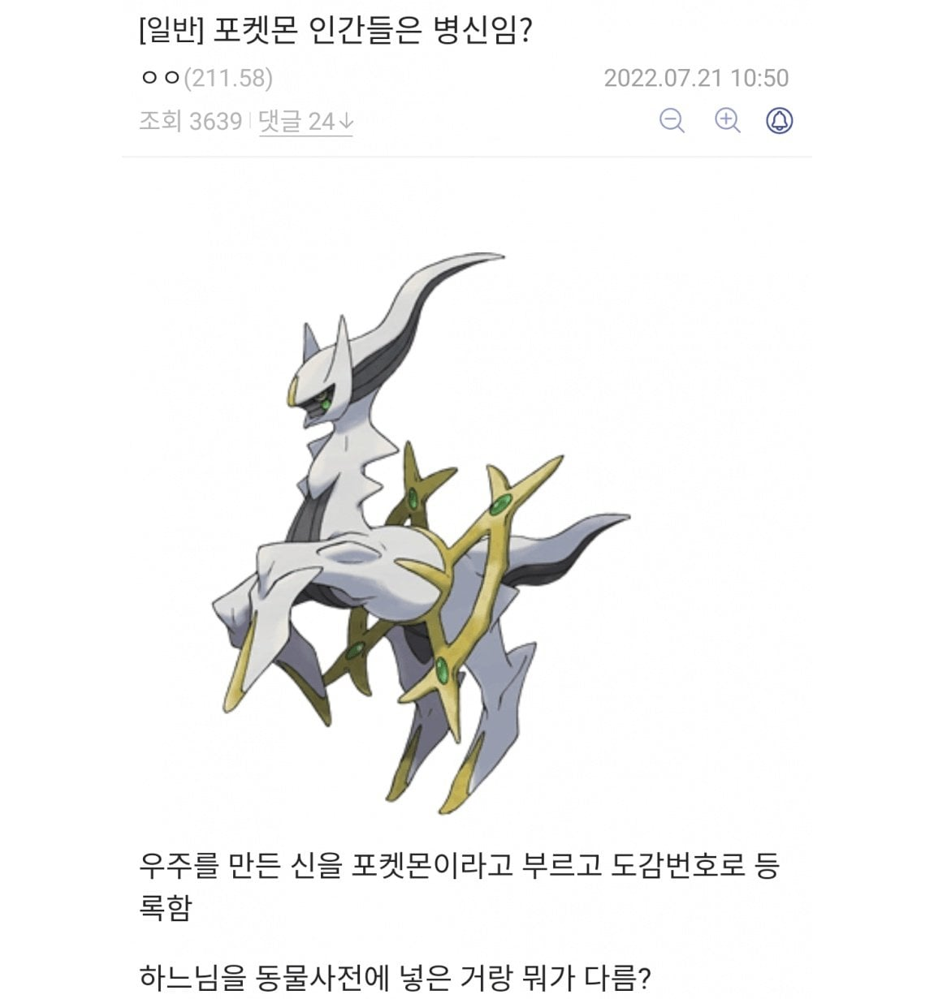

창조신 (도감번호 493번)

창조신 (도감번호 493번)
모든 포켓몬 만난게 맞음? 그럼 그 다음 작들에 등장하는 포켓몬은 그 이후 시점에 발생하는거임? ㅋㅋㅋ
아직 창조중이라 다른지방이 없다고 ㅋㅋㅋㅋㅋ
아 현역이셨네~
편견없는 세계관
포켓몬 뇌절 존나심해졌누..
얘는20년된 친군데??
ㅋㅋㅋㅋㅋ 진짜로 20년 다되감
20년전부터 뇌절이긴함
존나 뇌절이긴 함
번개 내리친 탑 불 끄던 개 3마리 부활시키고 전포
자기 활동 범위 넓히겠다고 싸우는 2마리도 전포
유전자 조작 포켓몬도 전포
격투가 좋아 청년도 전포
예외는 없습니다!!
ㅋㅋㅋㅋㅋㅋㅋㅋㅋ
잡힌거 보니까 사이비 신이네
하느님도 마스터볼 한방에 다 주거
151가지가 근본임
저 포켓몬도 헌금 뜯어감???
헌금은 안뜯고
사람이 저기다 박던데?
궁금해서 찾아보니 쟤 본체는 아니고 발톱의 떼보다 못한 분신이라는거 봤음 ㅋㅋㅋ
일단 분신이긴함 ㅋㅋㅋㅋ
scp같은거라고 생각하자
다만 아르세우스를 만나려면 기라티나와 펄기아의 싸움을 말려야하며 기라티나의 야욕을 저지해야하며 마지막으로 세상의 모든포켓몬을 다 만나고와서 천계의 피리를 불어야한다